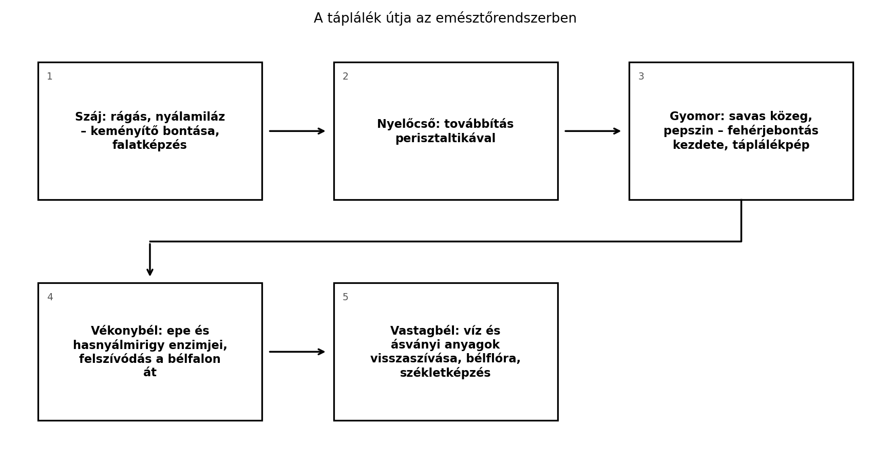

A vendég nem a tányérból, hanem a saját szervezetéből nyeri ki az energiát és a tápanyagokat. Hiába tökéletes a rántott hús, ha a szervezet nem tudja lebontani és felszívni. A szakács feladata, hogy az étel ne csak jó ízű legyen, hanem emészthető is. Aki érti, mi történik a táplálékkal a szájtól a vastagbélig, az tudatosan választ kímélő konyhatechnikát, megfelelő hőkezelést és darabolást – ezzel segíti a vendég emésztését, csökkenti a panaszokat, és jobb minőségű ételeket készít.
Képzeld el, hogy a vendég elfogyaszt egy szelet sült csirkemellet párolt rizzsel és párolt zöldséggel. Az étel a szájban aprózódik, a gyomorban savas közegbe kerül, a vékonybélben enzimek bontják tovább. A tápanyagok a bélfalon át a vérbe jutnak, a maradék pedig a vastagbélbe halad. Minden szakasznak megvan a maga feladata, és minden konyhai művelet – a darabolás, a főzés, a párolás – valójában megkönnyíti ezt az utat. Az alábbi ábra áttekinti a főbb állomásokat:

Az ábra lépései mutatják, hogy az emésztés nem egyetlen pillanat, hanem szakaszokból álló folyamat. A szövegben leírtak segítenek értelmezni, hogyan kapcsolódik ez a konyhai gyakorlathoz.
Definíció. Emésztés: az a folyamat, amelynek során a szervezet a nagyobb, összetett táplálékalkotókat (fehérjék, szénhidrátok, zsírok) kisebb, felszívódásra alkalmas molekulákká bontja – mechanikai aprítással és kémiai (enzimes) hasítással –, majd ezeket a véráramba vagy a nyirokkeringésbe juttatja.
Az emésztőrendszer fő részei és feladatuk:
Összefüggés. Az ételek hőkezelése és aprítása a szájban kezdődő emésztést már a konyhában előkészíti. A megfelelő darabolás, a rostok oldása, a hőkezelés által denaturált fehérjék és a megduzzadt keményítő gyorsabban bomlanak le, így a vendég emésztési munkája csökken.
Az enzim olyan fehérje, amely meggyorsít egy kémiai átalakulást; az emésztőenzimek a nagy tápanyagmolekulákat bontják kisebbekre. A főbb enzimeket és a bontás végső termékeit a következő táblázat foglalja össze:
| Tápanyag | Főbb enzimek (eredet) | Emésztés helye | Felszívódásra alkalmas termék |
|---|---|---|---|
| Keményítő és más szénhidrátok | nyálamiláz (nyál), hasnyálamiláz, maltáz (bélfal) | száj, vékonybél | egycukrok (glükóz, fruktóz, galaktóz) |
| Fehérjék | pepszin (gyomor), tripszin, peptidázok (hasnyál és bélfal) | gyomor, vékonybél | aminosavak, rövid peptidek |
| Zsírok | nyelvi lipáz és gyomorlipáz (kis mértékben), hasnyálmirigy-lipáz | gyomor, vékonybél | zsírsavak és monogliceridek (kis részben glicerin) |
A diszacharidok (répacukor, tejcukor, malátacukor) közvetlenül nem szívódnak fel; a vékonybél falában lévő diszacharidázok bontják őket egyszerű cukrokra. A laktáz hiánya vezet a laktózintolerancia tüneteihez: a tejcukor bontatlan marad, a vastagbélben baktériumok erjesztik, ami gázt és hasmenést okoz. Ez a konyhában fontos: a laktózmentes étrendnél a tejcukrot le kell bontani vagy kerülni kell.
A felszívódás fő helye a vékonybél. A bélnyálkahártyán bélbolyhok (milliónyi apró ujjnyi kiemelkedés) sokszorosára növelik a felszívó felületet. Az egyszerű cukrok és az aminosavak a vérbe jutnak, a hosszú szénláncú zsírsavak pedig előbb a nyirokkeringésbe. A vízben oldódó vitaminok és az ásványi anyagok nagy része szintén a vékonybélben szívódik fel; a B12-vitamin és az epesók egy része a csípőbélben. A vastagbélben a víz, nátrium, kálium és egyes ásványi anyagok felszívódása folyik.
Az ábra az enzimtáblázatot és a felszívódást egy képben foglalja össze. Balról jobbra haladva az öt szakasz (száj, nyelőcső, gyomor, vékonybél, vastagbél), soronként egy-egy tápanyag útja látszik, a nyilak fölött az enzim neve. Mindhárom fő tápanyag a vékonybélben jut el a felszívható termékig (szürke dobozok), ezért a bélbolyhok ott növelik meg a felületet; a rost viszont bontatlanul ér a vastagbélbe.
Figyeld meg, hogy a szájban csak a keményítő bontása kezdődik el, a gyomorban pedig a fehérjéé; a zsírt az epe előbb apró cseppekre oszlatja, csak ezután bontja a lipáz. A HTML-kiadásban az öt szakaszon lépésenként végighaladva kiemelődik az adott szakasz, és megjelenik, mi történik benne a tápanyagokkal.
Bélflóra (bélmikrobiota). A vastagbélben nagy számban élő baktériumok a szervezet számára hasznos anyagokat termelnek (pl. K-vitamin, rövid szénláncú zsírsavak), de a megemésztetlen fehérjékből káros bomlástermékek is keletkezhetnek. A bélflóra összetételét az étrend befolyásolja: a rostban gazdag, változatos növényi ételek támogatják a hasznos baktériumokat.
Rostok. Az élelmi rostokat az emberi emésztőenzimek nem bontják le, ezért a vastagbélbe jutnak. Ott a baktériumok erjesztik őket, ami serkenti a bélműködést, növeli a széklet tömegét, és csökkenti a székrekedés kockázatát. A konyhai szempont: a rostokban gazdag zöldségeket, hüvelyeseket, teljes kiőrlésű gabonákat úgy kell előkészíteni és főzni, hogy a rostok megduzzadjanak és puhuljanak, így kevésbé terhelik az érzékeny emésztést. Például a száraz hüvelyesek áztatása és hosszú főzése oldja a kellemetlen puffasztó hatású oligoszacharidokat. Biztonsági szempont is: a nyers vagy félig főtt szárazbab lektint (fitohemagglutinin) tartalmaz, ezért a babot a főzés előtt át kell forralni (lásd a 6. feladat megoldását).
A konyhai műveletek jelentős része előemésztés. A hőkezelés megduzzasztja a keményítőt, denaturálja a fehérjéket, lágyítja a rostokat, és feltárja a tápanyagokat, így az enzimek könnyebben hozzáférnek. A darabolás, aprítás, pürésítés mechanikailag bontja a falatot, csökkenti a gyomor terhelését. A párolás, a főzés, a gőzölés kímélőbb, mint a magas hőmérsékletű, zsírban sütés; ezért diétás ételeknél, kórházi és idősotthoni konyhákban ezeket részesítik előnyben.
Példa. Ugyanaz a burgonya nyersen nehezen emészthető, sok nyers keményítőt tartalmaz. Főzve vagy párolva a keményítő elfolyósodik, a sejtfal megpuhul, így a szervezet szinte teljesen fel tudja használni. Ezért a burgonyát soha nem nyersen, hanem hőkezelve tálaljuk.
Kímélő elkészítési eljárások az emésztés szempontjából:
Továbbvitt eredmény. Az emészthetőség és a kímélő elkészítés kapcsolatát a Energia- és tápanyagszükséglet, korszerű táplálkozás alfejezet használja tovább, amikor a tápanyagsűrűséget és az ételek kímélő technológiáját együtt tervezzük meg.
Ebben az alfejezetben nincs ételkészítési technológiai lap, mert a téma az élettan és a táplálkozástudomány. A gyakorlati útmutató ezért egy konyhai ellenőrző lista, amely segít eldönteni, hogy egy étel mennyire kímélő az emésztés szempontjából.
Cél: a kész étel emészthetőségének gyors ellenőrzése a tálalás előtt.
Eszközök és anyagok: kész étel, kóstolókanál, szükség esetén villával/szűrővel nyomhatóvá tétel; a HACCP előírások szerinti tiszta környezet.
Biztonsági korlát. A kóstolás csak a higiéniai szabályok betartásával, tiszta eszközzel, a vonatkozó HACCP-terv szerint történjen. Nyers vagy nem biztonságos élelmiszert ne kóstolj.
Lépések:
A jól emészthető étel jellemzői:
Egy idősotthon konyháján a szakács száraz, teljes kiőrlésű búzából készült tésztát főzött, de nem főzte elég puhára, és hideg salátával tálalta. Több lakónál hasi puffadás és teltségérzés jelentkezett. A vizsgálat szerint a tészta kemény maradt, a hideg zöldség pedig tovább terhelte a gyomrot. A helyesbítés: a teljes kiőrlésű tésztát hosszabb főzéssel puhára készítették, a salátát pedig párolt zöldséggel helyettesítették. A panaszok megszűntek. Tanulság: az emészthetőség nem csak a nyersanyagtól függ, hanem a konyhatechnológiától is.
1. feladat (A) Sorold fel az emésztőrendszer fő szakaszait a szájtól a vastagbélig, és mindegyikhez írd a főbb feladatot.
2. feladat (A) Párosítsd az enzimet a bontott tápanyaggal: nyálamiláz, pepszin, hasnyál lipáz – fehérje, keményítő, zsír.
3. feladat (B) Magyarázd el, miért édes a kenyér hosszabb rágás után. Milyen kémiai folyamat zajlik a szájban?
4. feladat (B) Egy vendég érzékeny emésztésű, és te párolt csirkemellet készítesz. Írd le röviden, milyen technológiát választanál a hús és a köret elkészítésére, és miért ez a kímélőbb.
5. feladat (C) Dolgozz ki egy rövid ételsort (főétel két körettel) egy kórházi menühöz, amely az emészthetőséget helyezi előtérbe. Indokold a hőkezelési módokat és az állagot.
6. feladat (D) Keresd a hibát: egy étteremben a szakács a babot csak 20 percig főzte, mert sietett, és ropogósra sütötte a zöldségeket. Milyen emésztési problémákat okozhat, és mit kellett volna tennie?
Önellenőrzés – válaszok:
1. feladat (A) megoldása: Száj: rágás, nyálamiláz a keményítőre. Nyelőcső: továbbítás. Gyomor: savas közeg, pepszin, fehérjebontás kezdete. Vékonybél: fő emésztés és felszívódás. Vastagbél: vízvisszaszívás, bélflóra, székletképzés.
2. feladat (A) megoldása: Nyálamiláz – keményítő; pepszin – fehérje; hasnyál lipáz – zsír.
3. feladat (B) megoldása: A rágás közben a nyál nyálamiláza elkezdi a kenyérben lévő keményítőt maltózra bontani, a maltóz édes ízű, ezért érezzük édeskének.
4. feladat (B) megoldása: A csirkemellet alacsony hőfokon, kevés folyadékban párolnám, nem sütném bő zsiradékban. Köretként párolt rizst és puhára párolt zöldséget adnék, amelyek könnyen szétnyomhatók. Indoklás: a párolás denaturálja a fehérjét, megduzzasztja a keményítőt, puhítja a rostokat, és nem terheli felesleges zsiradékkal a gyomrot.
5. feladat (C) megoldása: Főétel: párolt csirkemell, köretként párolt rizs és répa-karfiol párolva. A húst kevés vízben, fedő alatt pároljuk, a rizst megfőzzük, a zöldséget gőzöljük. Minden puha, nem túl zsíros, nem csípős.
6. feladat (D) megoldása: A bab alulfőzve kemény marad, a hüvelyesekben lévő oligoszacharidok nem oldódnak ki, ezért a vastagbélben erjednek, puffadást és hasi diszkomfortot okoznak. A ropogósra sütött zöldség nyers maradhat, ami szintén megterheli az emésztést. A babot megfelelően áztatni és puhára főzni kell, a zöldséget pedig puhára párolni vagy gőzölni.
Élelmiszer-biztonsági hiba is: a nyers vagy félig főtt szárazbab lektint (fitohemagglutinin) tartalmaz, amely néhány szem után is hányást, hasmenést okozhat. A beáztatott babot a víz cseréje után forrásban lévő vízben legalább 10 percig erősen forralni, majd puhára főzni kell (ellenőrizendő: NÉBIH-útmutató / szakirodalmi idő). Alacsony hőfokú lassúfőzőben előforralás nélkül nem készíthető.
Az emésztés a táplálék mechanikai és enzimes lebontása a szájtól a vastagbélig, majd a felszívódás a vérbe és nyirokkeringésbe. A szájban a nyálamiláz a keményítőt bontja, a gyomorban a pepszin a fehérjéket, a vékonybélben a hasnyál enzimjei a szénhidrátokat, fehérjéket és zsírokat. A végső termékek: egycukrok, aminosavak, zsírsavak és monogliceridek (kis részben glicerin). A felszívódás fő helye a vékonybél bélbolyhai; a vastagbélben vízvisszaszívás és a bélflóra működése zajlik. Az élelmi rostok nem emésztődnek, de támogatják a bélműködést. A konyhatechnológia előemésztés: a darabolás, hőkezelés, pürésítés, áztatás és párolás puhítja a tápanyagokat, növeli az emészthetőséget. Kímélő eljárások a főzés, gőzölés, párolás; kerülendő a túlzott zsírban sütés, a nyers vagy félig nyers hús és tojás (fertőzésveszély) és a túlzott csípősség; a szárazbabot főzés előtt át kell forralni (lektin). Ez az összefüggés alapozza meg a Energia- és tápanyagszükséglet, korszerű táplálkozás alfejezet tápanyagsűrűségi és technológiai tervezését.
Az alfejezet klasszikus élettani és táplálkozástudományi ismereteket ismertet, közvetlen jogszabályi hivatkozást nem igényel. A hőkezelési határértékekre vonatkozó konkrét maghőmérsékleti értékeket a HACCP-terv és a NÉBIH-útmutató szerint kell ellenőrizni. A felszívódási arányokra és emésztési időkre itt nem adunk számszerű értéket, mert azok egyéni és élelmiszer-függőek. Az OKOSTÁNYÉR aktuális ajánlásai és a dietetikai szakmai anyagok az Energia- és tápanyagszükséglet, korszerű táplálkozás alfejezetben kerülnek elő.